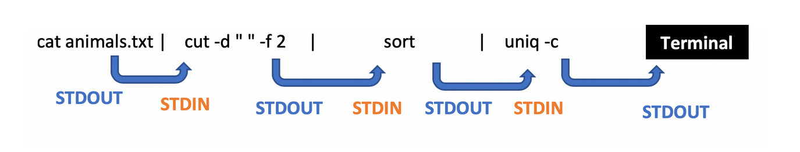
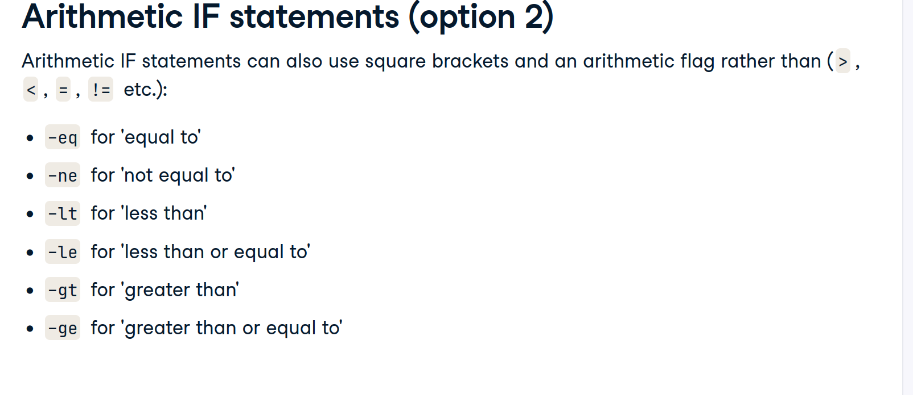
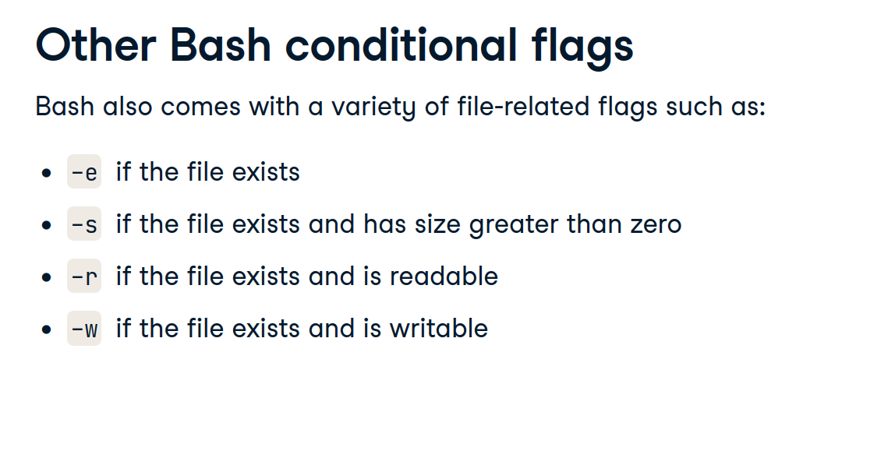
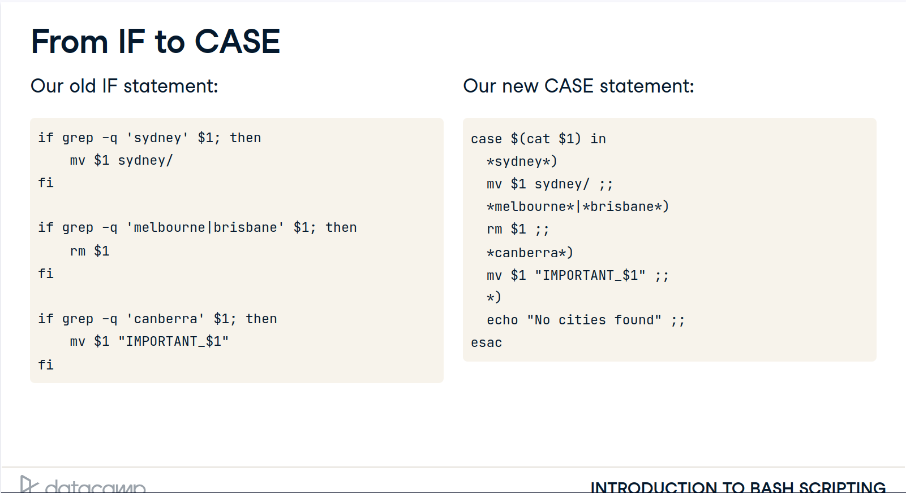
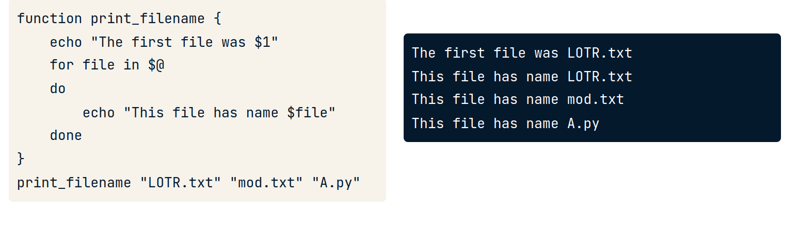
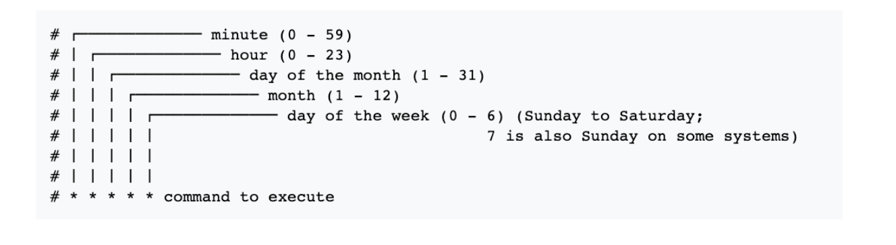

6 Manipulating files and directories
7 Failų sistema
7.1 pwd
The filesystem manages files and directories (or folders). Each is identified by an absolute path that shows how to reach it from the filesystem’s root directory: /home/repl is the directory repl in the directory home, while /home/repl/course.txt is a file course.txt in that directory, and / on its own is the root directory.
To find out where you are in the filesystem, run the command pwd (short for “print working directory”). This prints the absolute path of your current working directory, which is where the shell runs commands and looks for files by default.
Run pwd. Where are you right now?
Instructions 50 XP Possible answers /home /repl /home/repl
7.2 clear
7.3 ls
How can I identify files and directories?
pwd tells you where you are. To find out what’s there, type ls (which is short for “listing”) and press the enter key. On its own, ls lists the contents of your current directory (the one displayed by pwd). If you add the names of some files, ls will list them, and if you add the names of directories, it will list their contents. For example, ls /home/repl shows you what’s in your starting directory (usually called your home directory).
Use ls with an appropriate argument to list the files in the directory /home/repl/seasonal (which holds information on dental surgeries by date, broken down by season). Which of these files is not in that directory?
Possible answers autumn.csv fall.csv spring.csv winter.csv
How else can I identify files and directories?
An absolute path is like a latitude and longitude: it has the same value no matter where you are. A relative path, on the other hand, specifies a location starting from where you are: it’s like saying “20 kilometers north”.
As examples:
If you are in the directory /home/repl, the relative path seasonal specifies the same directory as the absolute path /home/repl/seasonal.
If you are in the directory /home/repl/seasonal, the relative path winter.csv specifies the same file as the absolute path /home/repl/seasonal/winter.csv.The shell decides if a path is absolute or relative by looking at its first character: If it begins with /, it is absolute. If it does not begin with /, it is relative. Instructions 2/3 35 XP
You are in /home/repl. Use ls with a relative path to list the file that has an absolute path of /home/repl/course.txt (and only that file).
You are in /home/repl. Use ls with a relative path to list the file /home/repl/seasonal/summer.csv (and only that file). 3
You are in /home/repl. Use ls with a relative path to list the contents of the directory /home/repl/people.
ls komanda yra list storage
ls / ls /home ls /home/pi ls ~ ls -l ls -lh ls -lha
drwxr-wxr-wx -rwxr-wxr-wx
7.4 /
/home
7.5 cd
How can I move to another directory?
Just as you can move around in a file browser by double-clicking on folders, you can move around in the filesystem using the command cd (which stands for “change directory”).
If you type cd seasonal and then type pwd, the shell will tell you that you are now in /home/repl/seasonal. If you then run ls on its own, it shows you the contents of /home/repl/seasonal, because that’s where you are. If you want to get back to your home directory /home/repl, you can use the command cd /home/repl. Instructions 1/3 35 XP
1
You are in /home/repl/. Change directory to /home/repl/seasonal using a relative path.2
Use pwd to check that you’re there. 3
Use ls without any paths to see what’s in that directory.
How can I move up a directory?
The parent of a directory is the directory above it. For example, /home is the parent of /home/repl, and /home/repl is the parent of /home/repl/seasonal. You can always give the absolute path of your parent directory to commands like cd and ls. More often, though, you will take advantage of the fact that the special path .. (two dots with no spaces) means “the directory above the one I’m currently in”. If you are in /home/repl/seasonal, then cd .. moves you up to /home/repl. If you use cd .. once again, it puts you in /home. One more cd .. puts you in the root directory /, which is the very top of the filesystem. (Remember to put a space between cd and .. - it is a command and a path, not a single four-letter command.)
A single dot on its own, ., always means “the current directory”, so ls on its own and ls . do the same thing, while cd . has no effect (because it moves you into the directory you’re currently in).
One final special path is ~ (the tilde character), which means “your home directory”, such as /home/repl. No matter where you are, ls ~ will always list the contents of your home directory, and cd ~ will always take you home.
If you are in /home/repl/seasonal, where does cd ~/../. take you?
- pirma
pwd - tada
cd / pwdcdarbacd ~arbacd /home/pi
7.6 Copy with cp
How can I copy files?
You will often want to copy files, move them into other directories to organize them, or rename them. One command to do this is cp, which is short for “copy”. If original.txt is an existing file, then:
cp original.txt duplicate.txt
creates a copy of original.txt called duplicate.txt. If there already was a file called duplicate.txt, it is overwritten. If the last parameter to cp is an existing directory, then a command like:
cp seasonal/autumn.csv seasonal/winter.csv backup
copies all of the files into that directory. Instructions 1/2 50 XP
1
Make a copy of seasonal/summer.csv in the backup directory (which is also in /home/repl), calling the new file summer.bck.2
Copy spring.csv and summer.csv from the seasonal directory into the backup directory without changing your current working directory (/home/repl).
7.7 Move the file with mw
How can I move a file?
While cp copies a file, mv moves it from one directory to another, just as if you had dragged it in a graphical file browser. It handles its parameters the same way as cp, so the command:
mv autumn.csv winter.csv ..
moves the files autumn.csv and winter.csv from the current working directory up one level to its parent directory (because .. always refers to the directory above your current location). Instructions 100 XP
You are in /home/repl, which has sub-directories seasonal and backup. Using a single command, move spring.csv and summer.csv from seasonal to backup.
7.8 rename files with mv
Exercise Exercise How can I rename files?
mv can also be used to rename files. If you run:
mv course.txt old-course.txt
then the file course.txt in the current working directory is “moved” to the file old-course.txt. This is different from the way file browsers work, but is often handy.
One warning: just like cp, mv will overwrite existing files. If, for example, you already have a file called old-course.txt, then the command shown above will replace it with whatever is in course.txt. Instructions 1/3 35 XP
1
Go into the seasonal directory.2
Rename the file winter.csv to be winter.csv.bck. 3
Run ls to check that everything has worked.
7.9 remove files with rm
Exercise Exercise How can I delete files?
We can copy files and move them around; to delete them, we use rm, which stands for “remove”. As with cp and mv, you can give rm the names of as many files as you’d like, so:
rm thesis.txt backup/thesis-2017-08.txt
removes both thesis.txt and backup/thesis-2017-08.txt
rm does exactly what its name says, and it does it right away: unlike graphical file browsers, the shell doesn’t have a trash can, so when you type the command above, your thesis is gone for good. Instructions 1/4 25 XP
1
You are in /home/repl. Go into the seasonal directory.2
Remove autumn.csv. 3
Go back to your home directory. 4
Remove seasonal/summer.csv without changing directories again.
7.10 create and remove a directory
Exercise Exercise How can I create and delete directories?
mv treats directories the same way it treats files: if you are in your home directory and run mv seasonal by-season, for example, mv changes the name of the seasonal directory to by-season. However, rm works differently.
If you try to rm a directory, the shell prints an error message telling you it can’t do that, primarily to stop you from accidentally deleting an entire directory full of work. Instead, you can use a separate command called rmdir. For added safety, it only works when the directory is empty, so you must delete the files in a directory before you delete the directory. (Experienced users can use the -r option to rm to get the same effect; we will discuss command options in the next chapter.) Instructions 1/4 25 XP
1
Without changing directories, delete the file agarwal.txt in the people directory.2
Now that the people directory is empty, use a single command to delete it. 3
Since a directory is not a file, you must use the command mkdir directory_name to create a new (empty) directory. Use this command to create a new directory called yearly below your home directory. 4
Now that yearly exists, create another directory called 2017 inside it without leaving your home directory.
Exercise Exercise Wrapping up
You will often create intermediate files when analyzing data. Rather than storing them in your home directory, you can put them in /tmp, which is where people and programs often keep files they only need briefly. (Note that /tmp is immediately below the root directory /, not below your home directory.) This wrap-up exercise will show you how to do that. Instructions 1/4 25 XP
1
Use cd to go into /tmp.2
List the contents of /tmp without typing a directory name. 3
Make a new directory inside /tmp called scratch. 4
Move /home/repl/people/agarwal.txt into /tmp/scratch. We suggest you use the ~ shortcut for your home directory and a relative path for the second rather than the absolute path.
8 Manipulating data
8.1 Viewing file contents with cat
Exercise Exercise How can I view a file’s contents?
Before you rename or delete files, you may want to have a look at their contents. The simplest way to do this is with cat, which just prints the contents of files onto the screen. (Its name is short for “concatenate”, meaning “to link things together”, since it will print all the files whose names you give it, one after the other.)
cat agarwal.txt
name: Agarwal, Jasmine position: RCT2 start: 2017-04-01 benefits: full
Instructions 100 XP
Print the contents of course.txt to the screen.
8.2 mutliple paged files with less
How can I view a file’s contents piece by piece?
You can use cat to print large files and then scroll through the output, but it is usually more convenient to page the output. The original command for doing this was called more, but it has been superseded by a more powerful command called less. (This kind of naming is what passes for humor in the Unix world.) When you less a file, one page is displayed at a time; you can press spacebar to page down or type q to quit.
If you give less the names of several files, you can type :n (colon and a lower-case ‘n’) to move to the next file, :p to go back to the previous one, or :q to quit.
Note: If you view solutions to exercises that use less, you will see an extra command at the end that turns paging off so that we can test your solutions efficiently. Instructions 100 XP
Use less seasonal/spring.csv seasonal/summer.csv to view those two files in that order. Press spacebar to page down, :n to go to the second file, and :q to quit.
8.3 top n rows with head
Exercise How can I look at the start of a file?
The first thing most data scientists do when given a new dataset to analyze is figure out what fields it contains and what values those fields have. If the dataset has been exported from a database or spreadsheet, it will often be stored as comma-separated values (CSV). A quick way to figure out what it contains is to look at the first few rows.
We can do this in the shell using a command called head. As its name suggests, it prints the first few lines of a file (where “a few” means 10), so the command:
head seasonal/summer.csv
displays:
Date,Tooth 2017-01-11,canine 2017-01-18,wisdom 2017-01-21,bicuspid 2017-02-02,molar 2017-02-27,wisdom 2017-02-27,wisdom 2017-03-07,bicuspid 2017-03-15,wisdom 2017-03-20,canine
What does head do if there aren’t 10 lines in the file? (To find out, use it to look at the top of people/agarwal.txt.) Instructions 50 XP Possible answers Print an error message because the file is too short. Display as many lines as there are. Display enough blank lines to bring the total to 10.
8.4 autocompletion with tab
Exercise Exercise How can I type less?
One of the shell’s power tools is tab completion. If you start typing the name of a file and then press the tab key, the shell will do its best to auto-complete the path. For example, if you type sea and press tab, it will fill in the directory name seasonal/ (with a trailing slash). If you then type a and tab, it will complete the path as seasonal/autumn.csv.
If the path is ambiguous, such as seasonal/s, pressing tab a second time will display a list of possibilities. Typing another character or two to make your path more specific and then pressing tab will fill in the rest of the name. Instructions 1/2 50 XP
1
Run head seasonal/autumn.csv without typing the full filename.2
Run head seasonal/spring.csv without typing the full filename.
8.5 flags
Exercise Exercise How can I control what commands do?
You won’t always want to look at the first 10 lines of a file, so the shell lets you change head’s behavior by giving it a command-line flag (or just “flag” for short). If you run the command:
head -n 3 seasonal/summer.csv
head will only display the first three lines of the file. If you run head -n 100, it will display the first 100 (assuming there are that many), and so on.
A flag’s name usually indicates its purpose (for example, -n is meant to signal “number of lines”). Command flags don’t have to be a - followed by a single letter, but it’s a widely-used convention.
Note: it’s considered good style to put all flags before any filenames, so in this course, we only accept answers that do that. Instructions 100 XP
Display the first 5 lines of winter.csv in the seasonal directory.
8.6 ls
Exercise Exercise How can I list everything below a directory?
In order to see everything underneath a directory, no matter how deeply nested it is, you can give ls the flag -R (which means “recursive”). If you use ls -R in your home directory, you will see something like this:
backup course.txt people seasonal
./backup:
./people: agarwal.txt
./seasonal: autumn.csv spring.csv summer.csv winter.csv
This shows every file and directory in the current level, then everything in each sub-directory, and so on. Instructions 100 XP
To help you know what is what, ls has another flag -F that prints a / after the name of every directory and a * after the name of every runnable program. Run ls with the two flags, -R and -F, and the absolute path to your home directory to see everything it contains. (The order of the flags doesn’t matter, but the directory name must come last.)
8.7 see manual with man
Exercise Exercise How can I get help for a command?
To find out what commands do, people used to use the man command (short for “manual”). For example, the command man head brings up this information:
HEAD(1) BSD General Commands Manual HEAD(1)
NAME head – display first lines of a file
SYNOPSIS head [-n count | -c bytes] [file …]
DESCRIPTION This filter displays the first count lines or bytes of each of the specified files, or of the standard input if no files are specified. If count is omitted it defaults to 10.
If more than a single file is specified, each file is preceded by
a header consisting of the string ``==> XXX <=='' where ``XXX''
is the name of the file.SEE ALSO tail(1)
man automatically invokes less, so you may need to press spacebar to page through the information and :q to quit.
The one-line description under NAME tells you briefly what the command does, and the summary under SYNOPSIS lists all the flags it understands. Anything that is optional is shown in square brackets […], either/or alternatives are separated by |, and things that can be repeated are shown by …, so head’s manual page is telling you that you can either give a line count with -n or a byte count with -c, and that you can give it any number of filenames.
The problem with the Unix manual is that you have to know what you’re looking for. If you don’t, you can search Stack Overflow, ask a question on DataCamp’s Slack channels, or look at the SEE ALSO sections of the commands you already know. Instructions 1/2 50 XP
1
Read the manual page for the tail command to find out what putting a + sign in front of the number used with the -n flag does. (Remember to press spacebar to page down and/or type q to quit.)2
Use tail with the flag -n +7 to display all but the first six lines of seasonal/spring.csv.
8.8 cut command
Exercise Exercise How can I select columns from a file?
head and tail let you select rows from a text file. If you want to select columns, you can use the command cut. It has several options (use man cut to explore them), but the most common is something like:
cut -f 2-5,8 -d , values.csv
which means “select columns 2 through 5 and columns 8, using comma as the separator”. cut uses -f (meaning “fields”) to specify columns and -d (meaning “delimiter”) to specify the separator. You need to specify the latter because some files may use spaces, tabs, or colons to separate columns.
What command will select the first column (containing dates) from the file spring.csv? Instructions 50 XP Possible answers cut -d , -f 1 seasonal/spring.csv cut -d, -f1 seasonal/spring.csv Either of the above. Neither of the above, because -f must come before -d.
Exercise Exercise What can’t cut do?
cut is a simple-minded command. In particular, it doesn’t understand quoted strings. If, for example, your file is:
Name,Age “Johel,Ranjit”,28 “Sharma,Rupinder”,26
then:
cut -f 2 -d , everyone.csv
will produce:
Age Ranjit” Rupinder”
rather than everyone’s age, because it will think the comma between last and first names is a column separator.
What is the output of cut -d : -f 2-4 on the line:
first:second:third:
(Note the trailing colon.) Instructions 50 XP Possible answers second second:third second:third: None of the above, because there aren’t four fields.
8.9 history
Exercise Exercise How can I repeat commands?
One of the biggest advantages of using the shell is that it makes it easy for you to do things over again. If you run some commands, you can then press the up-arrow key to cycle back through them. You can also use the left and right arrow keys and the delete key to edit them. Pressing return will then run the modified command.
Even better, history will print a list of commands you have run recently. Each one is preceded by a serial number to make it easy to re-run particular commands: just type !55 to re-run the 55th command in your history (if you have that many). You can also re-run a command by typing an exclamation mark followed by the command’s name, such as !head or !cut, which will re-run the most recent use of that command. Instructions 1/5 20 XP
1
2
3
4
5Run head summer.csv in your home directory (which should fail).
8.10 grep
How can I select lines containing specific values?
head and tail select rows, cut selects columns, and grep selects lines according to what they contain. In its simplest form, grep takes a piece of text followed by one or more filenames and prints all of the lines in those files that contain that text. For example, grep bicuspid seasonal/winter.csv prints lines from winter.csv that contain “bicuspid”.
grep can search for patterns as well; we will explore those in the next course. What’s more important right now is some of grep’s more common flags:
-c: print a count of matching lines rather than the lines themselves
-h: do not print the names of files when searching multiple files
-i: ignore case (e.g., treat "Regression" and "regression" as matches)
-l: print the names of files that contain matches, not the matches
-n: print line numbers for matching lines
-v: invert the match, i.e., only show lines that don't matchInstructions 1/3 35 XP
1
Print the contents of all of the lines containing the word molar in seasonal/autumn.csv by running a single command while in your home directory. Don't use any flags.2
Invert the match to find all of the lines that don’t contain the word molar in seasonal/spring.csv, and show their line numbers. Remember, it’s considered good style to put all of the flags before other values like filenames or the search term “molar”. 3
Count how many lines contain the word incisor in autumn.csv and winter.csv combined. (Again, run a single command from your home directory.)
9 Combining tools
9.1 Redirection >
Exercise Exercise How can I store a command’s output in a file?
All of the tools you have seen so far let you name input files. Most don’t have an option for naming an output file because they don’t need one. Instead, you can use redirection to save any command’s output anywhere you want. If you run this command:
head -n 5 seasonal/summer.csv
it prints the first 5 lines of the summer data on the screen. If you run this command instead:
head -n 5 seasonal/summer.csv > top.csv
nothing appears on the screen. Instead, head’s output is put in a new file called top.csv. You can take a look at that file’s contents using cat:
cat top.csv
The greater-than sign > tells the shell to redirect head’s output to a file. It isn’t part of the head command; instead, it works with every shell command that produces output. Instructions 100 XP
Combine tail with redirection to save the last 5 lines of seasonal/winter.csv in a file called last.csv.
Exercise Exercise How can I use a command’s output as an input?
Suppose you want to get lines from the middle of a file. More specifically, suppose you want to get lines 3-5 from one of our data files. You can start by using head to get the first 5 lines and redirect that to a file, and then use tail to select the last 3:
head -n 5 seasonal/winter.csv > top.csv tail -n 3 top.csv
A quick check confirms that this is lines 3-5 of our original file, because it is the last 3 lines of the first 5. Instructions 1/2 50 XP
1
Select the last two lines from seasonal/winter.csv and save them in a file called bottom.csv.2
Select the first line from bottom.csv in order to get the second-to-last line of the original file.
What’s a better way to combine commands?
Using redirection to combine commands has two drawbacks:
It leaves a lot of intermediate files lying around (like top.csv).
The commands to produce your final result are scattered across several lines of history.The shell provides another tool that solves both of these problems at once called a pipe. Once again, start by running head:
head -n 5 seasonal/summer.csv
Instead of sending head’s output to a file, add a vertical bar and the tail command without a filename:
head -n 5 seasonal/summer.csv | tail -n 3
The pipe symbol tells the shell to use the output of the command on the left as the input to the command on the right. Instructions 100 XP
Use cut to select all of the tooth names from column 2 of the comma delimited file seasonal/summer.csv, then pipe the result to grep, with an inverted match, to exclude the header line containing the word “Tooth”. cut and grep were covered in detail in Chapter 2, exercises 8 and 11 respectively.
Exercise Exercise How can I combine many commands?
You can chain any number of commands together. For example, this command:
cut -d , -f 1 seasonal/spring.csv | grep -v Date | head -n 10
will:
select the first column from the spring data;
remove the header line containing the word "Date"; and
select the first 10 lines of actual data.Instructions 100 XP
In the previous exercise, you used the following command to select all the tooth names from column 2 of seasonal/summer.csv:
cut -d , -f 2 seasonal/summer.csv | grep -v Tooth
Extend this pipeline with a head command to only select the very first tooth name.
9.2 word count with wc
Exercise Exercise How can I count the records in a file?
The command wc (short for “word count”) prints the number of characters, words, and lines in a file. You can make it print only one of these using -c, -w, or -l respectively. Instructions 100 XP
Count how many records in seasonal/spring.csv have dates in July 2017 (2017-07).
To do this, use grep with a partial date to select the lines and pipe this result into wc with an appropriate flag to count the lines.9.3 wildcard **
How can I specify many files at once?
Most shell commands will work on multiple files if you give them multiple filenames. For example, you can get the first column from all of the seasonal data files at once like this:
cut -d , -f 1 seasonal/winter.csv seasonal/spring.csv seasonal/summer.csv seasonal/autumn.csv
But typing the names of many files over and over is a bad idea: it wastes time, and sooner or later you will either leave a file out or repeat a file’s name. To make your life better, the shell allows you to use wildcards to specify a list of files with a single expression. The most common wildcard is *, which means “match zero or more characters”. Using it, we can shorten the cut command above to this:
cut -d , -f 1 seasonal/*
or:
cut -d , -f 1 seasonal/*.csv
Instructions 100 XP
Write a single command using head to get the first three lines from both seasonal/spring.csv and seasonal/summer.csv, a total of six lines of data, but not from the autumn or winter data files. Use a wildcard instead of spelling out the files’ names in full.
What other wildcards can I use?
The shell has other wildcards as well, though they are less commonly used:
? matches a single character, so 201?.txt will match 2017.txt or 2018.txt, but not 2017-01.txt.
[...] matches any one of the characters inside the square brackets, so 201[78].txt matches 2017.txt or 2018.txt, but not 2016.txt.
{...} matches any of the comma-separated patterns inside the curly brackets, so {*.txt, *.csv} matches any file whose name ends with .txt or .csv, but not files whose names end with .pdf.Which expression would match singh.pdf and johel.txt but not sandhu.pdf or sandhu.txt?
9.4 sorting with sort
How can I sort lines of text?
As its name suggests, sort puts data in order. By default it does this in ascending alphabetical order, but the flags -n and -r can be used to sort numerically and reverse the order of its output, while -b tells it to ignore leading blanks and -f tells it to fold case (i.e., be case-insensitive). Pipelines often use grep to get rid of unwanted records and then sort to put the remaining records in order. Instructions 100 XP
Remember the combination of cut and grep to select all the tooth names from column 2 of seasonal/summer.csv?
cut -d , -f 2 seasonal/summer.csv | grep -v Tooth
Starting from this recipe, sort the names of the teeth in seasonal/winter.csv (not summer.csv) in descending alphabetical order. To do this, extend the pipeline with a sort step.
9.5 remove adjesent duplicates
How can I remove duplicate lines?
Another command that is often used with sort is uniq, whose job is to remove duplicated lines. More specifically, it removes adjacent duplicated lines. If a file contains:
2017-07-03 2017-07-03 2017-08-03 2017-08-03
then uniq will produce:
2017-07-03 2017-08-03
but if it contains:
2017-07-03 2017-08-03 2017-07-03 2017-08-03
then uniq will print all four lines. The reason is that uniq is built to work with very large files. In order to remove non-adjacent lines from a file, it would have to keep the whole file in memory (or at least, all the unique lines seen so far). By only removing adjacent duplicates, it only has to keep the most recent unique line in memory. Instructions 100 XP
Write a pipeline to:
get the second column from seasonal/winter.csv,
remove the word "Tooth" from the output so that only tooth names are displayed,
sort the output so that all occurrences of a particular tooth name are adjacent; and
display each tooth name once along with a count of how often it occurs.The start of your pipeline is the same as the previous exercise:
cut -d , -f 2 seasonal/winter.csv | grep -v Tooth
Extend it with a sort command, and use uniq -c to display unique lines with a count of how often each occurs rather than using uniq and wc.
9.6 redirecting
Exercise How can I save the output of a pipe?
The shell lets us redirect the output of a sequence of piped commands:
cut -d , -f 2 seasonal/*.csv | grep -v Tooth > teeth-only.txt
However, > must appear at the end of the pipeline: if we try to use it in the middle, like this:
cut -d , -f 2 seasonal/*.csv > teeth-only.txt | grep -v Tooth
then all of the output from cut is written to teeth-only.txt, so there is nothing left for grep and it waits forever for some input.
What happens if we put redirection at the front of a pipeline as in:
result.txt head -n 3 seasonal/winter.csv
Instructions 50 XP Possible answers The command’s output is redirected to the file as usual. The shell reports it as an error. The shell waits for input forever.
9.7 break out with ctrl + c
Exercise Exercise How can I stop a running program?
The commands and scripts that you have run so far have all executed quickly, but some tasks will take minutes, hours, or even days to complete. You may also mistakenly put redirection in the middle of a pipeline, causing it to hang up. If you decide that you don’t want a program to keep running, you can type Ctrl + C to end it. This is often written ^C in Unix documentation; note that the ‘c’ can be lower-case. Instructions 100 XP
Run the command:
head
with no arguments (so that it waits for input that will never come) and then stop it by typing Ctrl + C.
9.8 wrap up exercise
Wrapping up
To wrap up, you will build a pipeline to find out how many records are in the shortest of the seasonal data files. Instructions 3/3 30 XP
Use wc with appropriate parameters to list the number of lines in all of the seasonal data files. (Use a wildcard for the filenames instead of typing them all in by hand.)
Add another command to the previous one using a pipe to remove the line containing the word “total”. 3
Add two more stages to the pipeline that use sort -n and head -n 1 to find the file containing the fewest lines.
10 Batch processing
How does the shell store information?
Like other programs, the shell stores information in variables. Some of these, called environment variables, are available all the time. Environment variables’ names are conventionally written in upper case, and a few of the more commonly-used ones are shown below. Variable Purpose Value HOME User’s home directory /home/repl PWD Present working directory Same as pwd command SHELL Which shell program is being used /bin/bash USER User’s ID repl
To get a complete list (which is quite long), you can type set in the shell.
Use set and grep with a pipe to display the value of HISTFILESIZE, which determines how many old commands are stored in your command history. What is its value? Instructions 50 XP Possible answers 10 500 2000 The variable is not there.
How can I print a variable’s value?
A simpler way to find a variable’s value is to use a command called echo, which prints its arguments. Typing
echo hello DataCamp!
prints
hello DataCamp!
If you try to use it to print a variable’s value like this:
echo USER
it will print the variable’s name, USER.
To get the variable’s value, you must put a dollar sign $ in front of it. Typing
echo $USER
prints
repl
This is true everywhere: to get the value of a variable called X, you must write $X. (This is so that the shell can tell whether you mean “a file named X” or “the value of a variable named X”.) Instructions 100 XP Instructions 100 XP
The variable OSTYPE holds the name of the kind of operating system you are using. Display its value using echo.
10.1 shell variable
How else does the shell store information?
The other kind of variable is called a shell variable, which is like a local variable in a programming language.
To create a shell variable, you simply assign a value to a name:
training=seasonal/summer.csv
without any spaces before or after the = sign. Once you have done this, you can check the variable’s value with:
echo $training
seasonal/summer.csv
Instructions 1/2 50 XP
1
Define a variable called testing with the value seasonal/winter.csv.2
Use head -n 1 SOMETHING to get the first line from seasonal/winter.csv using the value of the variable testing instead of the name of the file.
10.2 for
How can I repeat a command many times?
Shell variables are also used in loops, which repeat commands many times. If we run this command:
for filetype in gif jpg png; do echo $filetype; done
it produces:
gif jpg png
Notice these things about the loop:
The structure is for …variable… in …list… ; do …body… ; done
The list of things the loop is to process (in our case, the words gif, jpg, and png).
The variable that keeps track of which thing the loop is currently processing (in our case, filetype).
The body of the loop that does the processing (in our case, echo $filetype).Notice that the body uses $filetype to get the variable’s value instead of just filetype, just like it does with any other shell variable. Also notice where the semi-colons go: the first one comes between the list and the keyword do, and the second comes between the body and the keyword done. Instructions 100 XP
Modify the loop so that it prints:
docx odt pdf
Please use filetype as the name of the loop variable.
How can I repeat a command once for each file?
You can always type in the names of the files you want to process when writing the loop, but it’s usually better to use wildcards. Try running this loop in the console:
for filename in seasonal/*.csv; do echo $filename; done
It prints:
seasonal/autumn.csv seasonal/spring.csv seasonal/summer.csv seasonal/winter.csv
because the shell expands seasonal/*.csv to be a list of four filenames before it runs the loop. Instructions 100 XP
Modify the wildcard expression to people/* so that the loop prints the names of the files in the people directory regardless of what suffix they do or don’t have. Please use filename as the name of your loop variable.
How can I record the names of a set of files?
People often set a variable using a wildcard expression to record a list of filenames. For example, if you define datasets like this:
datasets=seasonal/*.csv
you can display the files’ names later using:
for filename in $datasets; do echo $filename; done
This saves typing and makes errors less likely.
If you run these two commands in your home directory, how many lines of output will they print?
files=seasonal/*.csv for f in $files; do echo $f; done
Instructions 50 XP Possible answers None: since files is defined on a separate line, it has no value in the second line. One: the word “files”. Four: the names of all four seasonal data files.
A variable’s name versus its value
A common mistake is to forget to use $ before the name of a variable. When you do this, the shell uses the name you have typed rather than the value of that variable.
A more common mistake for experienced users is to mis-type the variable’s name. For example, if you define datasets like this:
datasets=seasonal/*.csv
and then type:
echo $datsets
the shell doesn’t print anything, because datsets (without the second “a”) isn’t defined.
If you were to run these two commands in your home directory, what output would be printed?
files=seasonal/*.csv for f in files; do echo $f; done
(Read the first part of the loop carefully before answering.) Answer the question 50XP Possible Answers Select one answer
One line: the word "files".
Press
1
Four lines: the names of all four seasonal data files.
Press
2
Four blank lines: the variable f isn't assigned a value.
Press
3How can I run many commands in a single loop?
Printing filenames is useful for debugging, but the real purpose of loops is to do things with multiple files. This loop prints the second line of each data file:
for file in seasonal/*.csv; do head -n 2 $file | tail -n 1; done
It has the same structure as the other loops you have already seen: all that’s different is that its body is a pipeline of two commands instead of a single command. Instructions 100 XP
Write a loop that prints the last entry from July 2017 (2017-07) in every seasonal file. It should produce a similar output to:
grep 2017-07 seasonal/winter.csv | tail -n 1
but for each seasonal file separately. Please use file as the name of the loop variable, and remember to loop through the list of files seasonal/*.csv (instead of ‘seasonal/winter.csv’ as in the example).
10.3 filenames
Why shouldn’t I use spaces in filenames?
It’s easy and sensible to give files multi-word names like July 2017.csv when you are using a graphical file explorer. However, this causes problems when you are working in the shell. For example, suppose you wanted to rename July 2017.csv to be 2017 July data.csv. You cannot type:
mv July 2017.csv 2017 July data.csv
because it looks to the shell as though you are trying to move four files called July, 2017.csv, 2017, and July (again) into a directory called data.csv. Instead, you have to quote the files’ names so that the shell treats each one as a single parameter:
mv ‘July 2017.csv’ ‘2017 July data.csv’
If you have two files called current.csv and last year.csv (with a space in its name) and you type:
rm current.csv last year.csv
what will happen: Answer the question 50XP Possible Answers Select one answer
The shell will print an error message because last and year.csv do not exist.
Press
1
The shell will delete current.csv.
Press
2
Both of the above.
Press
3
Nothing.
Press
410.4
How can I do many things in a single loop?
The loops you have seen so far all have a single command or pipeline in their body, but a loop can contain any number of commands. To tell the shell where one ends and the next begins, you must separate them with semi-colons:
for f in seasonal/*.csv; do echo $f; head -n 2 $f | tail -n 1; done
seasonal/autumn.csv 2017-01-05,canine seasonal/spring.csv 2017-01-25,wisdom seasonal/summer.csv 2017-01-11,canine seasonal/winter.csv 2017-01-03,bicuspid
Suppose you forget the semi-colon between the echo and head commands in the previous loop, so that you ask the shell to run:
for f in seasonal/*.csv; do echo $f head -n 2 $f | tail -n 1; done
What will the shell do? Instructions 50 XP Possible answers Print an error message. Print one line for each of the four files. Print one line for autumn.csv (the first file). Print the last line of each file.
11 Creating new tools
11.1 nano
How can I edit a file?
Unix has a bewildering variety of text editors. For this course, we will use a simple one called Nano. If you type nano filename, it will open filename for editing (or create it if it doesn’t already exist). You can move around with the arrow keys, delete characters using backspace, and do other operations with control-key combinations:
Ctrl + K: delete a line.
Ctrl + U: un-delete a line.
Ctrl + O: save the file ('O' stands for 'output'). You will also need to press Enter to confirm the filename!
Ctrl + X: exit the editor.Instructions 100 XP
Run nano names.txt to edit a new file in your home directory and enter the following four lines:
Lovelace Hopper Johnson Wilson
To save what you have written, type Ctrl + O to write the file out, then Enter to confirm the filename, then Ctrl + X to exit the editor.
11.2 history
When you are doing a complex analysis, you will often want to keep a record of the commands you used. You can do this with the tools you have already seen:
Run history.
Pipe its output to tail -n 10 (or however many recent steps you want to save).
Redirect that to a file called something like figure-5.history.This is better than writing things down in a lab notebook because it is guaranteed not to miss any steps. It also illustrates the central idea of the shell: simple tools that produce and consume lines of text can be combined in a wide variety of ways to solve a broad range of problems. Instructions 2/3 35 XP
Copy the files seasonal/spring.csv and seasonal/summer.csv to your home directory. 2
Use grep with the -h flag (to stop it from printing filenames) and -v Tooth (to select lines that don’t match the header line) to select the data records from spring.csv and summer.csv in that order and redirect the output to temp.csv. 3
Pipe history into tail -n 3 and redirect the output to steps.txt to save the last three commands in a file. (You need to save three instead of just two because the history command itself will be in the list.)
How can I save commands to re-run later?
You have been using the shell interactively so far. But since the commands you type in are just text, you can store them in files for the shell to run over and over again. To start exploring this powerful capability, put the following command in a file called headers.sh:
head -n 1 seasonal/*.csv
This command selects the first row from each of the CSV files in the seasonal directory. Once you have created this file, you can run it by typing:
bash headers.sh
This tells the shell (which is just a program called bash) to run the commands contained in the file headers.sh, which produces the same output as running the commands directly. Instructions 1/2 50 XP
1
Use nano dates.sh to create a file called dates.sh that contains this command:
cut -d , -f 1 seasonal/*.csv
to extract the first column from all of the CSV files in seasonal.2
Use bash to run the file dates.sh.
How can I re-use pipes?
A file full of shell commands is called a *shell script, or sometimes just a “script” for short. Scripts don’t have to have names ending in .sh, but this lesson will use that convention to help you keep track of which files are scripts.
Scripts can also contain pipes. For example, if all-dates.sh contains this line:
cut -d , -f 1 seasonal/*.csv | grep -v Date | sort | uniq
then:
bash all-dates.sh > dates.out
will extract the unique dates from the seasonal data files and save them in dates.out. Instructions 1/3 35 XP
1
A file teeth.sh in your home directory has been prepared for you, but contains some blanks. Use Nano to edit the file and replace the two ____ placeholders with seasonal/*.csv and -c so that this script prints a count of the number of times each tooth name appears in the CSV files in the seasonal directory.2
Use bash to run teeth.sh and > to redirect its output to teeth.out. 3
Run cat teeth.out to inspect your results.
How can I pass filenames to scripts?
A script that processes specific files is useful as a record of what you did, but one that allows you to process any files you want is more useful. To support this, you can use the special expression $@ (dollar sign immediately followed by at-sign) to mean “all of the command-line parameters given to the script”.
For example, if unique-lines.sh contains sort $@ | uniq, when you run:
bash unique-lines.sh seasonal/summer.csv
the shell replaces $@ with seasonal/summer.csv and processes one file. If you run this:
bash unique-lines.sh seasonal/summer.csv seasonal/autumn.csv
it processes two data files, and so on.
As a reminder, to save what you have written in Nano, type Ctrl + O to write the file out, then Enter to confirm the filename, then Ctrl + X to exit the editor. Instructions 1/2 50 XP
1
Edit the script count-records.sh with Nano and fill in the two ____ placeholders with $@ and -l (the letter) respectively so that it counts the number of lines in one or more files, excluding the first line of each.2
Run count-records.sh on seasonal/*.csv and redirect the output to num-records.out using >.
How can I process a single argument?
As well as $@, the shell lets you use $1, $2, and so on to refer to specific command-line parameters. You can use this to write commands that feel simpler or more natural than the shell’s. For example, you can create a script called column.sh that selects a single column from a CSV file when the user provides the filename as the first parameter and the column as the second:
cut -d , -f $2 $1
and then run it using:
bash column.sh seasonal/autumn.csv 1
Notice how the script uses the two parameters in reverse order.
The script get-field.sh is supposed to take a filename, the number of the row to select, the number of the column to select, and print just that field from a CSV file. For example:
bash get-field.sh seasonal/summer.csv 4 2
should select the second field from line 4 of seasonal/summer.csv. Which of the following commands should be put in get-field.sh to do that? Answer the question 50XP Possible Answers Select one answer
head -n $1 $2 | tail -n 1 | cut -d , -f $3
Press
1
head -n $2 $1 | tail -n 1 | cut -d , -f $3
Press
2
head -n $3 $1 | tail -n 1 | cut -d , -f $2
Press
3
head -n $2 $3 | tail -n 1 | cut -d , -f $1
Press
4How can one shell script do many things?
Our shells scripts so far have had a single command or pipe, but a script can contain many lines of commands. For example, you can create one that tells you how many records are in the shortest and longest of your data files, i.e., the range of your datasets’ lengths.
Note that in Nano, “copy and paste” is achieved by navigating to the line you want to copy, pressing CTRL + K to cut the line, then CTRL + U twice to paste two copies of it.
As a reminder, to save what you have written in Nano, type Ctrl + O to write the file out, then Enter to confirm the filename, then Ctrl + X to exit the editor. Instructions 1/4 25 XP
Use Nano to edit the script range.sh and replace the two ____ placeholders with $@ and -v so that it lists the names and number of lines in all of the files given on the command line without showing the total number of lines in all files. (Do not try to subtract the column header lines from the files.)
Use Nano again to add sort -n and head -n 1 in that order to the pipeline in range.sh to display the name and line count of the shortest file given to it.
Again using Nano, add a second line to range.sh to print the name and record count of the longest file in the directory as well as the shortest. This line should be a duplicate of the one you have already written, but with sort -n -r rather than sort -n.
Run the script on the files in the seasonal directory using seasonal/*.csv to match all of the files and redirect the output using > to a file called range.out in your home directory.
How can I write loops in a shell script?
Shell scripts can also contain loops. You can write them using semi-colons, or split them across lines without semi-colons to make them more readable:
12 Print the first and last data records of each file.
for filename in $@ do head -n 2 $filename | tail -n 1 tail -n 1 $filename done
(You don’t have to indent the commands inside the loop, but doing so makes things clearer.)
The first line of this script is a comment to tell readers what the script does. Comments start with the # character and run to the end of the line. Your future self will thank you for adding brief explanations like the one shown here to every script you write.
As a reminder, to save what you have written in Nano, type Ctrl + O to write the file out, then Enter to confirm the filename, then Ctrl + X to exit the editor. Instructions 1/3 35 XP
1
Fill in the placeholders in the script date-range.sh with $filename (twice), head, and tail so that it prints the first and last date from one or more files.2
Run date-range.sh on all four of the seasonal data files using seasonal/*.csv to match their names. 3
Run date-range.sh on all four of the seasonal data files using seasonal/*.csv to match their names, and pipe its output to sort to see that your scripts can be used just like Unix’s built-in commands.
What happens when I don’t provide filenames?
A common mistake in shell scripts (and interactive commands) is to put filenames in the wrong place. If you type:
tail -n 3
then since tail hasn’t been given any filenames, it waits to read input from your keyboard. This means that if you type:
head -n 5 | tail -n 3 somefile.txt
then tail goes ahead and prints the last three lines of somefile.txt, but head waits forever for keyboard input, since it wasn’t given a filename and there isn’t anything ahead of it in the pipeline.
Suppose you do accidentally type:
head -n 5 | tail -n 3 somefile.txt
What should you do next? Instructions 50 XP Possible answers Wait 10 seconds for head to time out. Type somefile.txt and press Enter to give head some input. Use Ctrl + C to stop the running head program.
13 Bash scripting
13.1 From Command-Line to Bash Script
BASH = (Bourne Again Shell)
(e)greofilters input based on regex pattern matchingcatconcatenates file content line-by-linetail/headgive only the last-nlineswcdoes a character, word or line count (with flags-c,-w,-l)seddoes pattern-matched string replacement“Regex” or reguler expressions are expressions helping to match a particlar string
regex
[]creates a set^[]inverts the set
Extracting scores with shell
There is a file in either the start_dir/first_dir, start_dir/second_dir or start_dir/third_dir directory called soccer_scores.csv. It has columns Year,Winner,Winner Goals for outcomes of a soccer league.
cd into the correct directory and use cat and grep to find who was the winner in 1959. You could also just ls from the top directory if you like! Instructions 50 XP Possible answers Winner Dunav Botev
Searching a book with shell
There is a copy of Charles Dickens’s infamous ‘Tale of Two Cities’ in your home directory called two_cities.txt.
Use command line arguments such as cat, grep and wc with the right flag to count the number of lines in the book that contain either the character ‘Sydney Carton’ or ‘Charles Darnay’. Use exactly these spellings and capitalizations. Instructions 50 XP Possible answers 77 32 45
cat two_cities.txt | egrep ‘Sydney Carton|Charles Darnay’ | wc -l
13.2 First bash script
- first line
#!/usr/bash- check with
which bashas the directory might be different
- check with
- main code follows
- has the file extension
.shwhich is not needed if the first line has the she-bang - can be run with
bash script.shor just by./script.sh
Shell pipelines to Bash scripts
In this exercise, you are working as a sports analyst for a Bulgarian soccer league. You have received some data on the results of the grand final from 1932 in a csv file. The file is comma-delimited in the format Year,Winner,Winner Goals which lists the year of the match, the team that won and how many goals the winning team scored, such as 1932,Arda,4.
Your job is to create a Bash script from a shell piped command which will aggregate to see how many times each team has won.
Don’t worry about the tail -n +2 part, this just ensures we don’t aggregate the CSV headers! Ide Exercise Instruction 100XP
Create a single-line pipe to cat the soccer_scores.csv file, cut out the relevant field and aggregate (sort & uniq -c will help!) based on winning team.
Save your script and run from the console.cat soccer_scores.csv | cut -d “,” -f 2 | tail -n +2 | sort | uniq -c
Extract and edit using Bash scripts
Continuing your work for the Bulgarian soccer league - you need to do some editing on the data you have. Several teams have changed their names so you need to do some replacements. The data is the same as the previous exercise.
You will need to create a Bash script that makes use of sed to change the required team names. Ide Exercise Instruction 100XP
Create a pipe using sed twice to change the team Cherno to Cherno City first, and then Arda to Arda United.
Pipe the output to a file called soccer_scores_edited.csv.
Save your script and run from the console. Try opening soccer_scores_edited.csv using shell commands to confirm it worked (the first line should be changed)!cat soccer_scores.csv | sed ‘s/Cherno/Cherno City/g’ | sed ‘s/Arda/Arda United/g’ > soccer_scores_edited.csv
13.3 standard streans and arguments
STDIN (stadnard input). A stream of data into the program
STDOUT (standard output) A stream of data out of the programm
STDERR (standard error) Errors in your program
2> /dev/nullredirecting the STDERR to be deleted1> /dev/nullwould be STDOUT

- ARGV is the array of all atguments given
- each argument can be acess via the $ notation: $1, $2
$@and$*give allt he arguments in ARGV$#gives the lentgh (number) of arguments
Using arguments in Bash scripts
Often you will find that your Bash scripts are part of an overall analytics pipeline or process, so it’s very useful to be able to take in arguments (ARGV) from the command line and use these inside your scripts.
Your job is to create a Bash script that will return the arguments inputted as well as utilize some of the special properties of ARGV elements in Bash scripts.
Since we are using arguments, you must run your script from the terminal pane, not using the ‘run this file’ button. Ide Exercise Instruction 100XP
Echo the first and second ARGV arguments.
Echo out the entire ARGV array in one command (not each element).
Echo out the size of ARGV (how many arguments fed in).
Save your script and run from the terminal pane using the arguments Bird Fish Rabbit. Don't use the ./script.sh method.#!/usr/bash
# Echo the first and second ARGV arguments
echo $1
echo $2
# Echo out the entire ARGV array
echo $@
# Echo out the size of ARGV
echo $#`bash script.sh Bird Fish Rabbit
Bird
Fish
Bird Fish Rabbit
3Using arguments with HR data
In this exercise, you are working as a data scientist in the HR department of a large IT company. You need to extract salary figures for recent hires, however, the HR IT system simply spits out hundreds of files into the folder /hire_data.
Each file is comma-delimited in the format COUNTRY,CITY,JOBTITLE,SALARY such as Estonia,Tallinn,Javascript Developer,118286
Your job is to create a Bash script to extract the information needed. Depending on the task at hand, you may need to go back and extract data for a different city. Therefore, your script will need to take in a city (an argument) as a variable, filter all the files by this city and output to a new CSV with the city name. This file can then form part of your analytics work. Ide Exercise Instruction 100XP
Echo the first ARGV argument so you can confirm it is being read in.
cat all the files in the directory /hire_data and pipe to grep to filter using the city name (your first ARGV argument).
On the same line, pipe out the filtered data to a new CSV called cityname.csv where cityname is taken from the first ARGV argument.
Save your script and run from the console twice (do not use the ./script.sh method). Once with the argument Seoul. Then once with the argument Tallinn.# Echo the first ARGV argument
echo $1
# Cat all the files
# Then pipe to grep using the first ARGV argument
# Then write out to a named csv using the first ARGV argument
cat hire_data/*.csv | grep "$1" > "$1".csvbash script.sh Seoul bash script.sh Tallinn
13.4 Variables in Bash Scripting
13.4.1 Basic variables in Bash
var1=“Moon” $var1
firstname=“John” lastname=“Wick” echo “Hello” $firstname $lastnname
Note, there can be no spaces around = else bash will not work
var1 = “Moon” $var1
- single quotes
'...'shell interprets what is between literally - souble quotes
"..."shell interpres literally expcept using $ and backticks backtiks...shell runs the command and captures STDOUT back into a variable
now_var='NOW'
now_var_singlequote='$now_var'
echo $now_var_singlequote
now_var_doublequote="$now_var"
echo $now_var_doublequotedate
rightnow_doubleuote="The date is `date`."
echo $rightnow_doubleuotealternative usge $() which is more stardard way in bash
rightnow_doubleuote="The date is `$(date)`."
echo $rightnow_doubleuoteUsing variables in Bash
You have just joined a data analytics team at a new company after someone left very quickly to pursue a new job (lucky them!). Unfortunately they left so fast they did not have time to finish the Bash script they were working on as part of a new chatbot project.
There is an error with this script - it is printing out the words yourname rather than the person’s name. You know this has something to do with variable assignment - can you help fix this script? Add the necessary components to ensure this script runs correctly. Ide Exercise Instruction 100XP
Create a variable, yourname that contains the name of the user. Let's use the test name 'Sam' for this.
Fix the echo statement so it prints the variable and not the word yourname.
Run your script.# Create the required variable
____="____"
# Print out the assigned name (Help fix this error!)
echo "Hi there yourname, welcome to the website!"Shell within a shell
Which of the following correctly uses a ‘shell within a shell’ to print out the date? We do not want to select the option that will just print out the string ‘date’.
You could try these in the console yourself! Instructions 50 XP Possible answers echo “Right now it is”date”” echo “Right now it is date” echo “Right now it is $date”
13.5 Numeric variables in Bash
expris a useful utility programm (just likecatorgrep)expr 1+4it cannot handle decimal places
expr 1 + 2.5bc
1 + 2.5quitorecho “1+2.5”| bc
scalenumber of decimal places for returned valreecho “10/3”| bc
echo “scale=3; 10/3”| bc
dog_name='Roger'
dog_age=6
echo "... $dog_name...$dog_age"- expr 5+7
- echo $((5 +7)) <- still uses expr not bc, so no decimals
model_1=87.65
model_2=89.20
echo "The total score is $(echo "model_1 + model_2" |bc)"
echo "The avergae score is $(echo "(model_1 + model_2) / 2" |bc)"Converting Fahrenheit to Celsius
You work in the analytics department for an Australian company that recently purchased an American company. The files and data from the US company are in the imperial system and need to be converted to metric. This sounds like a great opportunity to use your Bash skills to create a program which will assist.
Your task is to write a program that takes in a single number (a temperature in Fahrenheit) as an ARGV argument, converts it to Celsius and returns the new value. There may be decimal places so you will need to undertake calculations using the bc program.
At all times use 2 decimal places using the scale command for bc.
The formula for Fahrenheit to Celsius is:
C = (F - 32) x (5/9)
Remember, since we are using arguments, you will need to run your script from the terminal pane rather than ‘run this file’ button. Ide Exercise Instruction 100XP
Create a variable temp_f from the first ARGV argument.
Call a shell-within-a-shell to subtract 32 from temp_f and assign to variable temp_f2.
Using the same method, multiply temp_f2 by 5 and divide by 9, assigning to a new variable temp_c then print out temp_c.
Save and run your script (in the terminal) using 108 Fahrenheit (the forecast temperature in Parramatta, Sydney this Saturday!).# Get first ARGV into variable
temp_f=____
# Subtract 32
temp_f2=$(echo "scale=2; $temp_f - ____" | bc)
# Multiply by 5/9
temp_c=$(echo "scale=2; $temp_f2 * ____ / 9" | bc)
# Print the celsius temp
echo ____Extracting data from files
You are a data scientist for a climate research organization. To update some models, you need to extract temperature data for 3 regions you are monitoring. Unfortunately the temperature reading devices are quite old and can only be configured to dump data each day into a folder called temps on your server. Each file contains the daily temperature for each region.
Your task is to extract the data from each file (by concatenating) into the relevant variable and print it out. The temperature in the file region_A needs to be assigned to the variable temp_a and so on.
You will later do some more advanced calculations on these variables. Ide Exercise Instruction 100XP
Create three variables from the data in the three files within temps by concatenating the content into a variable using a shell-within-a-shell.
Print out the variables to ensure it worked.
Save your script and run from the command line.# Create three variables from the temp data files' contents
temp_a=$(____ temps/____)
temp_b=$(____ temps/____)
temp_c=$(____ temps/____)
# Print out the three variables
echo "The three temperatures were ____, $temp_b, and $temp_c"13.6 Arrays in Bash
numerical-indexed array
declare -a my_first_array
my_dirst_array=(1 2 3)
my_dirst_array=(1,2,3) this is not correct, bash uses spaces not commas
all array elements can be returned using
array[@]. Bash requires curly{}brackes around the array name when you want to access these propertiesaccessing array elements using quare brackes. note index starts at 0. so the thrid element is
[2](like in Python)set array elements usingf the index notation
slicing a subset of array
- array[@]:N:M
- :N start index
- :M number of elements
appending arrays
array+=(elements)- if missing
()then 10 will be added to the first element
my_array=(1 3 5 2)
echo ${my_array[@]}
echo ${#my_array[@]}
echo ${my_array[2]}
my_array[0]=999
echo ${my_array[@]}
echo ${my_array[@]:1:2}
my_array+=(111)
echo ${my_array[@]}
my_array+=111
echo ${my_array[@]}- associative array
declare -A city_details # declare first
city_details=([city_name]="New York" [population]=14000000) # add eleemtens
echo ${city_details[city_name]} # index using key to return a value
echo ${city_details[population]} # index using key to return a valuecity_details=([city_name]="New York" [population]=14000000) # directly add elements
echo ${city_details[city_name]} # index using key to return a value
echo ${city_details[population]} # index using key to return a value!returns all the keys
echo ${!city_details[@]}Creating an array
In this exercise, you will practice building and accessing key properties of an array. Understanding what key properties are built in to Bash is important for fully utilizing arrays. For example, when iterating through arrays, knowing their length is very handy. Similarly, knowing how to easily return all array elements is also important for looping and also for checking your work and printing.
In this exercise, you will firstly build an array using two different methods and then access the length of the array. You will then return the entire array using a different special property. Instructions 1/3 35 XP
1
2
3
Create a normal array called capital_cities which contains the cities Sydney, Albany and Paris. Do not use the declare method; fill the array as you create it. Be sure to put double quotation marks around each element!# Create a normal array with the mentioned elements
capital_cities=____14 Create a normal array with the mentioned elements
capital_cities=(“Sydney” “Albany” “Paris”)
Create a normal array called capital_cities using the declare method.
Below, add each city, appending to the array. The cities were Sydney, Albany, and Paris. Remember to use double quotation marks.15 Create a normal array with the mentioned elements using the declare method
declare -a capital_cities
16 Add (append) the elements
capital_cities+=(“Sydney”) capital_cities+=(“Albany”) capital_cities+=(“Paris”)
Now you have the array created, print out the entire array using a special array property.
Then print out the length of the array using another special property.17 The array has been created for you
capital_cities=(“Sydney” “Albany” “Paris”)
18 Print out the entire array
echo ${capital_cities[____]}
19 The array has been created for you
capital_cities=(“Sydney” “Albany” “Paris”)
20 Print out the entire array
echo ${capital_cities[@]}
21 Print out the array length
echo ${#capital_cities[@]}
22 Print out the array length
echo ${____capital_cities[____]}
Creating associative arrays
Associative arrays are powerful constructs to use in your Bash scripting. They are very similar to ‘normal’ arrays, however they have a few important differences in their creation, manipulation and key properties.
Associative arrays allow you to index using words rather than numbers, which can be important for ease of inputting and accessing properties. For example, rather than accessing ‘index 4’ of an array about a city’s information, you can access the city_population property, which is a lot clearer!
In this exercise we will practice creating and adding to an associative array. We will then access some special properties that are unique to associative arrays. Let’s get started!
NOTE: if you submit incorrect code, you may need to refresh the browser to remove old variables etc that affect the test suite before submitting again Instructions 1/3 35 XP
1
2
3
Create an empty associative array called model_metrics.
Add the following key-value pairs; (model_accuracy, 98), (model_name, "knn"), (model_f1, 0.82).23 Create empty associative array
declare -A model_metrics
24 Add the key-value pairs
model_metrics[model_accuracy]=98 model_metrics[model_name]=“knn” model_metrics[model_f1]=0.82
Create the same associative array (model_metrics) all in one line. (model_accuracy, 98), (model_name, "knn"), (model_f1, 0.82). Remember you must add square brackets* around the keys!
Print out the entire array to see what you created.25 Declare associative array with key-value pairs on one line
declare -A model_metrics=([model_accuracy]=98 [model_name]=“knn” [model_f1]=0.82)
26 Print out the entire array
echo ${model_metrics[@]}
Now that you’ve created an associative array, print out just all the keys of this associative array.
27 An associative array has been created for you
declare -A model_metrics=([model_accuracy]=98 [model_name]=“knn” [model_f1]=0.82)
28 Print out all the keys
echo ${!model_metrics[@]}
Climate calculations in Bash
You are continuing your work as a data scientist for the climate research organization. In a previous exercise, you extracted temperature data for 3 regions you are monitoring from some files from the /temps directory.
Remember, each file contains the daily temperature for each region. However, only two regions will be used in this exercise.
In this exercise, the lines from your previous exercise are already there which extract the data from each file. However, this time you will then store these variables in an array, calculate the average temperature of the regions and append this to the array.
For example, for temperatures of 60 and 70, the array should have 60, 70, and 65 as its elements. Ide Exercise Instruction 100XP
Create an array with the two temp variables as elements.
Call an external program to get the average temperature. You will need to sum array elements then divide by 2. Use the scale parameter to ensure this is to 2 decimal places.
Append average_temp to your array and print out the entire array.
Run your script.29 Create variables from the temperature data files
temp_b=“\((cat temps/region_B)" temp_c="\)(cat temps/region_C)”
30 Create an array with these variables as elements
region_temps=(____ ____)
31 Call an external program to get average temperature
average_temp=\((echo "scale=2; (\){____[0]} + ${____[1]}) / 2” | ____)
32 Append average temp to the array
region_temps+=($____)
33 Print out the whole array
echo ${region_temps[____]} s
34 Create variables from the temperature data files
temp_b=“\((cat temps/region_B)" temp_c="\)(cat temps/region_C)”
35 Create an array with these variables as elements
region_temps=($temp_b $temp_c)
36 Call an external program to get average temperature
average_temp=\((echo "scale=2; (\){region_temps[0]} + ${region_temps[1]}) / 2” | bc)
37 Append average temp to the array
region_temps+=($average_temp)
38 Print out the whole array
echo ${region_temps[@]}
## Control Statements in Bash Scripting
### IF statements
```BASH
if [condition]; then
...
else
...
fix="Queen"
if [ $x=="King" ]; then
echo "$x is a King!"
else
echo "$x is not a King!"
fix=10
if (($x>5)); then
echo "$x is more than 5"
fi  * AND && * OR ||
Sorting model results
You are working as a data scientist in a large corporation. The production environment for your machine learning models writes out text files into the model_results/ folder whenever an experiment is completed. The files have the following structure (example):
Model Name: KNN Accuracy: 89 F1: 0.87 Date: 2019-12-01 ModelID: 34598utjfddfgdg
You can see the model name, accuracy and F1 scores, the date the experiment completed and a unique ID to link the model experiment back into your experiment system.
The company has a threshold of 90% for accuracy for a model to continue experimentation. Your task is to write a Bash script that takes in an ARGV argument (a filename), extracts the accuracy score and conditionally sorts the model result file into one of two folders: good_models/ for those with accuracy greater than or equal to 90 and bad_models/ for those less than 90. You must run your script from the terminal with the requested arguments before submitting your answer.
NOTE!! If you don’t run the script with an argument, it will hang - so make sure to run the script with the requested argument! If you make an error requiring a hint - you may need to refresh the session before submitting as well! Ide Exercise Instruction 100XP
Create a variable, accuracy by extracting the Accuracy line in the first ARGV element.
Create an IF statement to move the file into good_models/ folder if it is greater than or equal to 90 using a flag, not a mathematical sign.
Create an IF statement to move the file into bad_models/ folder if it is less than 90 using a flag, not a mathematical sign.
Run your script from the terminal pane twice (using bash script.sh). Once with model_results/model_1.txt, then once with model_results/model_2.txt as the only argument.# Extract Accuracy from first ARGV element
accuracy=$(grep ____ $1 | sed 's/.* //')
# Conditionally move into good_models folder
if [ $accuracy -____ 90 ]; then
mv $1 ____/
____
# Conditionally move into bad_models folder
if [ $accuracy -lt 90 ]; then
mv $1 ____/
fi39 Extract Accuracy from first ARGV element
accuracy=$(grep Accuracy $1 | sed ‘s/.* //’)
40 Conditionally move into good_models folder
if [ $accuracy -ge 90 ]; then mv $1 good_models/ fi
41 Conditionally move into bad_models folder
if [ $accuracy -lt 90 ]; then mv $1 bad_models/ fi
Moving relevant files
You have recently joined a new startup as one of the few technical employees. Your manager has asked if you can assist to clean up some of the folders on the server. The company has been through a variety of server monitoring software and so there are many files that should be deleted.
Luckily you know that all the files to keep contain both vpt and SRVM_ inside the file somewhere.
Your task is to write a Bash script that will take in file names as ARGV elements and move the file to good_logs/ if it matches both conditions above. Remember from the lecture, the q flag is for ‘quiet’ so it doesn’t return the matched lines like grep normally does. It just returns true if any lines match.
Remember that when you use command-line arguments like grep in IF statements, there is no need for square brackets so don’t add them! You must also remember to run your script using each file as an ARGV element. One each time; a total of four times to run your script. Ide Exercise Instruction 100XP
Create a variable sfile out of the first ARGV element.
Use an IF statement and grep to check if the sfile variable contains SRVM_ AND vpt inside.
Inside the IF statement, move matching files to the good_logs/ directory.
Try your script on all of the files in the directory (that is, run it four times - once for each file).42 Create variable from first ARGV element
sfile=____
43 Create an IF statement on sfile’s contents
if ____ -q ‘SRVM_’ $sfile && grep -q ‘____’ $sfile ; ____ # Move file if matched mv $sfile ____/ ____
43.1 FOR loops & WHILE statements
for x in 1 2 3
do
echo $x
donefor x in {1..5..2}
do
echo $x
donefor x in ((x=2;x<=4;x+=2))
do
echo $x
donefor book in books/*
do
echo $book
donefor book in $(ls books/ |grep -i 'air')
do
echo $book
donex=1
while [ $x -le 3 ];
do
echo $x
((x+=1))
doneA simple FOR loop
You are working as a data scientist in an organization. Due to a recent merge of departments, you have inherited a folder with many files inside. You know that the .R scripts may be useful for your work but you aren’t sure what they contain.
Write a simple Bash script to loop through all the files in the directory inherited_folder/ that end in .R and print out their names so you can get a quick look at what sort of scripts you have. Hopefully the file names are useful! Ide Exercise Instruction 100XP
Use a FOR statement to loop through files that end in .R in inherited_folder/ using a glob expansion.
echo out each file name into the console.44 Use a FOR loop on files in directory
for file in ____/*._ _
# Echo out each file echo ____ ____
Cleaning up a directory
Continuing your work as a data scientist in a large organization, you were told today that a colleague has left for their dream job (lucky them!). Unfortunately, when their logins were terminated, all their files were dumped into a single folder.
The good news is that most of their useful code has been backed up. However, all their python files using the Random Forest algorithm are buried in the file dump.
The task has fallen to you to sift through the hundreds of files to determine if they are both Python files and contain a Random Forest model. This sounds like a perfect opportunity to use your Bash skills, rather than checking every single file manually.
Write a script that loops through each file in the robs_files/ directory to see if it is a Python file (ends in .py) AND contains RandomForestClassifier. If so, move it into the to_keep/ directory. Ide Exercise Instruction 100XP
Use a FOR statement to loop through (using glob expansion) files that end in .py in robs_files/.
Use an IF statement and grep (remember the 'quiet' flag?) to check if RandomForestClassifier is in the file. Don't use a shell-within-a-shell here.
Move the Python files that contain RandomForestClassifier into the to_keep/ directory.45 Create a FOR statement on files in directory
for file in robs_files/____ ____
# Create IF statement using grep ____ grep -____ ‘____’ $file ; ____ # Move wanted files to to_keep/ folder ____ $file to_keep/ fi ____
46 Create a FOR statement on files in directory
for file in robs_files/*.py do
# Create IF statement using grep if grep -q ‘RandomForestClassifier’ $file ; then # Move wanted files to to_keep/ folder mv $file to_keep/ fi done
46.1 CASE statements
case 'STRINGVAR' in
PATTERN1)
COMMAND1;;
PATTERN2)
COMMAND2;;
*)
DEFAUL COMMAND;;
esac
Days of the week with CASE
In your role as a Data Scientist, it is sometimes useful to associate dates with a ‘working day’ (Monday, Tuesday, Wednesday, Thursday, Friday) or a ‘weekend’ (Saturday & Sunday).
Your task is to build a small Bash script that will be useful to call in many areas of your data pipeline. It must take in a single argument (string of a day) into ARGV and use a CASE statement to print out whether the argument was a weekday or a weekend. You only need to account for the capitalized case for now.
You also don’t need to worry about words or letters before and after. Just use exact matching for this example.
Remember the basic structure of a case statement is:
case MATCHVAR in PATTERN1) COMMAND1;; PATTERN2) COMMAND2;; *) DEFAULT COMMAND;; esac
Ide Exercise Instruction 100XP
Build a CASE statement that matches on the first ARGV element.
Create a match on each weekday such as Monday, Tuesday etc. using OR syntax on a single line, then a match on each weekend day (Saturday and Sunday) etc. using OR syntax on a single line.
Create a default match that prints out Not a day! if none of the above patterns are matched.
Save your script and run in the terminal window with Wednesday and Saturday to test.47 Create a CASE statement matching the first ARGV element
case ____ in # Match on all weekdays ____|____|____|____|____) echo “It is a Weekday!”____ # Match on all weekend days ____|Sunday) echo “It is a Weekend!”____ # Create a default ____) echo “Not a day!”____ ____
48 Create a CASE statement matching the first ARGV element
case $1 in # Match on all weekdays Monday|Tuesday|Wednesday|Thursday|Friday) echo “It is a Weekday!”;; # Match on all weekend days Satturday|Sunday) echo “It is a Weekend!”;; # Create a default *) echo “Not a day!”;; esac
Moving model results with CASE
You are working as a data scientist in charge of analyzing some machine learning model results. The production environment moves files into a folder called model_out/ and names them model_RXX.csv where XX is a random number related to which experiment was run.
Each file has the following structure (example):
Model Name, Accuracy, CV, Model Duration (s) Logistic,42,4,48
Your manager has told you that recent work in the organization has meant that tree-based models are to be kept in one folder and everything else deleted.
Your task is to use a CASE statement to move the tree-based models (Random Forest, GBM, and XGBoost) to the tree_models/ folder, and delete all other models (KNN and Logistic). Ide Exercise Instruction 100XP
Use a FOR statement to loop through (using glob expansion) files in model_out/.
Use a CASE statement to match on the contents of the file (we will use cat and shell-within-a-shell to get the contents to match against). It must check if the text contains a tree-based model name and move to tree_models/, otherwise delete the file.
Create a default match that prints out Unknown model in FILE where FILE is the filename then run your script.49 Use a FOR loop for each file in ‘model_out/’
for file in _____/ do # Create a CASE statement for each file’s contents case $(____ $file) in # Match on tree and non-tree models ”____“|GBM|_) mv $____ ____/ ;; _|Logistic*) ____ $file ;; # Create a default ____) echo “Unknown model in ____” ;; ____ done
50 Use a FOR loop for each file in ‘model_out/’
for file in model_out/ do # Create a CASE statement for each file’s contents case $(cat $file) in # Match on tree and non-tree models ”Random Forest”|GBM|XGBoost) mv $file tree_models/ ;; KNN|Logistic) rm $file ;; # Create a default ) echo “Unknown model in $file” ;; esac done
51 Functions and Automation
51.1 Basic functions in Bash
function_name () {
##function_code
return #something
}function function_name {
##function_code
return #something
}Uploading model results to the cloud
You are working as a data scientist on building part of your machine learning cloud infrastructure. Your team has many machine learning experiments running all the time. When an experiment is finished, it will output the results file and a configuration file into a folder called output_dir/.
These results need to be uploaded to your cloud storage environment for analysis. Your task is to write a Bash script that contains a function which will loop through all the files in output_dir/ and upload the result files to your cloud storage.
For technical reasons, no files will be uploaded; we will simply echo out the file name. Though you could easily replace this section with code to upload to Amazon S3, Google Cloud or Microsoft Azure! Ide Exercise Instruction 100XP
Set up a function using the 'function-word' method called upload_to_cloud.
Use a FOR statement to loop through (using glob expansion) files whose names contain results in output_dir/ and echo that the filename is being uploaded to the cloud.
Call the function just below the function definition using its name.52 Create function
____ upload_to_cloud () ____ # Loop through files with glob expansion for file in output_dir/____results_ do # Echo that they are being uploaded _ “Uploading $file to cloud” done ____
53 Call the function
upload_to_cloud
54 Create function
function upload_to_cloud () { # Loop through files with glob expansion for file in output_dir/results do # Echo that they are being uploaded echo “Uploading $file to cloud” done }
55 Call the function
upload_to_cloud
Get the current day
Whilst working on a variety of Bash scripts in your data analytics infrastructure, you find that you often need to get the current day of the week. You can see this is unnecessary duplication of code and can be refactored (reduce the size by writing more efficient code) using your new skills in Bash functions.
Write a simple Bash function that, when called, will simply print out the current day of the week. This will involve parsing the output of the date program from a shell-within-a-shell.
A reminder that the output of date will look something like this (depending on the timezone you are calling it from!)
Fri 27 Dec 2019 14:24:33 AEDT
You want to extract the Fri part only. Ide Exercise Instruction 100XP
Set up a function called what_day_is_it without using the word function (as you did using the function-word method).
Parse the output of date into a variable called current_day. The extraction component has been done for you.
Echo the result.
Call the function just below the function definition.56 Create function
_____ _____ {
# Parse the results of date ____=$(date | cut -d ” ” -f1)
# Echo the result echo ____ }
57 Call the function
58 Create function
what_day_is_it () {
# Parse the results of date current_day=$(date | cut -d ” ” -f1)
# Echo the result echo $current_day }
59 Call the function
what_day_is_it
59.1 Arguments, return values, and scope
- $1, $2 $@ $* $# 
- scope
- global
- local
- in bash all variables are global scope
- to restrict, one can use local
function print_filename{
local first_filename=$1
}
print_filename 'abc.txt' 'cde.txt'
echo $first_filename- return values
- $? if successful (0) failure (1-255)
A percentage calculator
In your work as a data scientist, you often find yourself needing to calculate percentages within Bash scripts. This would be a great opportunity to create a nice modular function to be called from different places in your code.
Your task is to create a Bash function that will calculate a percentage of two numbers that are given as arguments and return the value.
A test example you can think of to use in this script is a model that you just ran where there were 456 correct predictions out of 632 on the test set.
Remember that the shell can’t natively handle decimal places, so it will be safer to employ the use of bc. Ide Exercise Instruction 100XP
Create a function called return_percentage using the function-word method.
Create a variable inside the function called percent that divides the first argument fed into the function by the second argument.
Return the calculated value by echoing it back.
Call the function with the mentioned test values of 456 (the first argument) and 632 (the second argument) and echo the result.60 Create a function
____ return_percentage () ____
# Calculate the percentage using bc percent=$(echo “scale=2; 100 * ____ / ____” | ____)
# Return the calculated percentage echo $____ }
61 Create a function
function return_percentage () {
# Calculate the percentage using bc percent=$(echo “scale=2; 100 * $1 / $2” | bc)
# Return the calculated percentage echo $percent }
62 Call the function with 456 and 632 and echo the result
return_test=$(return_percentage 456 632) echo “456 out of 632 as a percent is $return_test%”
Sports analytics function
You have been contracted back to the soccer league to help them with some sports analytics. You notice that a number of the scripts undertake aggregations, just like you did in a previous exercise. Since there is a lot of duplication of code, this is an excellent opportunity to create a single useful function that can be called at many places in the script.
Your task is to create a Bash function that will take in a city name and find out how many wins they have had since recording began.
Inside the main function, this script will call out to a shell-within-a-shell which is captured in a (by default, global) variable. You can then access this variable outside the function. This was the first technique discussed in the video for getting data out of a function.
Most of the shell pipeline used has been done for you, though of course feel free to explore and understand what is happening here. Nothing there should be new to you! Ide Exercise Instruction 100XP
Create a function called get_number_wins using the function-word method.
Create a variable inside the function called win_stats that takes the argument fed into the function to filter the last step of the shell-pipeline presented.
Call the function using the city Etar.
Below the function call, try to access the win_stats variable created inside the function in the echo command presented.63 Create a function
function get_number_wins () {
# Filter aggregate results by argument win_stats=$(cat soccer_scores.csv | cut -d “,” -f2 | egrep -v ‘Winner’| sort | uniq -c | egrep $1)
}
64 Call the function with specified argument
get_number_wins “Etar”
65 Print out the global variable
echo “The aggregated stats are: $win_stats”
Summing an array
A common programming task is obtaining the sum of an array of numbers. Let’s create a function to assist with this common task.
Create a Bash function that will take in an array of numbers and return its sum. We will use bc rather than expr to ensure we can handle decimals.
Your company’s security rules state that all variables in functions must be restricted local scope so you will need to keep this in mind.
An array of numbers you can use for a test of your function would be the daily sales in your organization this week (in thousands):
14 12 23.5 16 19.34 which should sum to 84.84 Ide Exercise Instruction 100XP
Create a function called sum_array and add a base variable (equal to 0) called sum with local scope. You will loop through the array and increment this variable.
Create a FOR loop through the ARGV array inside sum_array (hint: This is not $1! but another special array property) and increment sum with each element of the array.
Rather than assign to a global variable, echo back the result of your FOR loop summation.
Call your function using the test array provided and echo the result. You can capture the results of the function call using the shell-within-a-shell notation.66 Create a function with a local base variable
function sum_array () { ____ sum=0 # Loop through, adding to base variable for number in “\(____" do sum=\)(echo”$sum + $____” | bc) done # Echo back the result echo \(____ } # Call function with array test_array=(14 12 23.5 16 19.34) total=\)(sum_array “${____[@]}”) echo “The total sum of the test array is $____”
67 Create a function with a local base variable
function sum_array () { local sum=0 # Loop through, adding to base variable for number in “\(@" do sum=\)(echo”$sum + $number” | bc) done # Echo back the result echo \(sum } # Call function with array test_array=(14 12 23.5 16 19.34) total=\)(sum_array “${test_array[@]}”) echo “The total sum of the test array is $total”
67.1 Scheduling your scripts with Cron
cron name comes from chronos greek word for time its a service that runs on comuter and executes user predefined commands (cronjobs) crontab is a file tat cotnains cronjob
crontab -l

exaples 5 1 * * * bash myscript.sh runs at 01:05 every day 15 14 * * 7 bash myscript.sh runs at 14:15 every sunday 15,30,45 * * * * bash myscript.sh every day on 15, 30, 45 minute mark /15 * * * bash myscript.sh runs every 15 minutes
crontab -e you might need to select an editor nano: ctrl+s ctrl+x crontab -l
https://crontab.guru/
Creating cronjobs
You are working as a data scientist managing an end-to-end machine learning environment in the cloud. You have created some great Bash scripts but it is becoming tedious to have to run these scripts every morning and afternoon. You recently learned about cron which you think can greatly assist here!
An example file has been placed in your directory where you can create some crontab jobs.
Remember that a crontab schedule has 5 stars relation to the time periods minute, hour, day-of-month, month-of-year, day-of-week. For this task, assume Sunday is the 0th day rather than the 7th day (as in some unix systems).
Note that where all time periods are not specified in the instructions below, you can assume those time periods are ‘every’ (*).
Don’t try to run the scripts or use crontab. Neither will work.
A useful tool for constructing crontabs is https://crontab.guru/. Instructions 100 XP
Create a crontab schedule that runs script1.sh at 30 minutes past 2am every day.
Create a crontab schedule that runs script2.sh every 15, 30 and 45 minutes past every hour.
Create a crontab schedule that runs script3.sh at 11.30pm on Sunday evening, every week. For this task, assume Sunday is the 0th day rather than the 7th day (as in some unix systems).68 Create a schedule for 30 minutes past 2am every day
__ * * * bash script1.sh
69 Create a schedule for every 15, 30 and 45 minutes past the hour
_____ bash script2.sh
70 Create a schedule for 11.30pm on Sunday evening, every week
_____ bash script3.sh
71 Create a schedule for 30 minutes past 2am every day
30 2 * * * bash script1.sh
72 Create a schedule for every 15, 30 and 45 minutes past the hour
15,30,45 * * * * bash script2.sh
73 Create a schedule for 11.30pm on Sunday evening, every week
30 23 * * 0 bash script3.sh
Scheduling cronjobs with crontab
As the resident data scientist, you have been asked to automate part of a data processing pipeline. You will use one of the cronjob schedules created in a previous exercise.
You will use the built in crontab functionality of this workspace to schedule a data pipeline script, extract_data.sh to run at 30 minutes past 2am every day. Running early in the morning saves a great amount of cost by utilizing cheaper server power.
You will end up in the nano text editor where you save a file with ctrl + o (press enter) and exit with ctrl + x. Useful Nano documentation is here.
At any stage you can refresh your browser window and you will get a fresh workspace to try again if you accidentally make a mistake in the workspace. Instructions 1/3 35 XP
1
Verify there are no existing cronjobs by listing them.2
Use the edit command for crontab (select nano) then schedule extract_data.sh to run with Bash at 2:30am every day.3
Verify the cronjob has been scheduled in the crontab by listing all current scheduled cronjobs.